Making Heterogeneity Programmable
Nearly every problem we ask of intelligence can be decomposed into parts. The moment it is, heterogeneity becomes the natural path - as in evolution - to greater capability, efficiency, and solutions that didn't exist before.
What we ask AI to do is rarely a single demand on compute. Looked at closely, most tasks are actually compositional: a bundle of distinct sub-problems assembled as one larger problem. Ask AI to review a contract and you have implicitly asked for retrieval, comparison, judgement, and synthesis, each with its own computational character. For the task to be done optimally, some parts may require deep reasoning; some may need speed; some will be trivial. It is the structure of the overall task that tells you, precisely, what kind of intelligence each part needs, and by extension, what compute should run it.
This is a compiler's way of seeing intelligence. Take a task such as "find the relevant clause in this corpus." A compiler parses the intent; decomposes it to the depth the task warrants; recombines the modular parts into an executable program; and distributes each part to the model and the hardware best suited for it to be implemented optimally. What comes back is not a next-token completion but a compiled program.
We call the modular parts, blocks: pre-verified primitives built to be composed. This modularity allows for a workflow to be constructed block-by-block, a programmability necessary for traversing a vast optimisation space - tailoring systems to the task, environment, agent, and end-user. It opens this space such that for any task there are many valid ways to solve it, each with its own cost, speed, and quality characteristics.

Compiling has an advantage that a single model call does not: the same task admits many valid programs, and each one has its own cost and speed. The monolith is one point in that space. Everything else is reachable only by decomposing.
We programmatically exploit that space of Heterogeneous Intelligence
First, we build the heterogeneous space by decomposing computations into modular parts that can be instantiated differently, assigned to different models, and placed on different silicon. Second, we search it to find novel programs that otherwise beat frontier models on cost and speed simultaneously. Third, we learn to navigate it, with a router that decides, per task, how much effort the problem warrants, and outperforms any fixed configuration.
Optimising subcomputations to heterogeneous hardware
Heterogeneous programs are 3.5× cheaper, 3.7× faster and 16.9 points of F1 score higher than the closest frontier agent
On the agentic code search task, we searched for programs over the block library and found three solutions: program A stops early for speed and cost; B and C add successively more evidence and verification. All three beat single-agent frontier baselines on F1 score (harmonic mean of recall and precision), while costing much less and running several times faster. How much less depends on which baseline you take. Against the cheapest and fastest frontier agent, GPT-5.6 Luna, our programs are 3.5× cheaper and 3.7× faster. Against the agents that lead on quality (Opus 5, Sonnet 5, GPT-5.6 Sol) the gap is an order of magnitude in cost and duration, while still leading in F1. The frontier here is not set by a better monolithic model. It is set by compiled programs running on mixed compute.

This is where heterogeneity earns its keep. Here, we hold Program A fixed (the same blocks in the same order) but vary the model and silicon used for each block. Each assignment produces a different balance of cost and latency. The most balanced assignment on the Pareto frontier is heterogeneous: different blocks run on different model-silicon pairs. Performance therefore depends not on any single model or silicon, but on how the program is distributed across both, making the best assignment something we can search for.
Running Program A across heterogeneous hardware achieves the best cost-latency balance. A Cerebras-only configuration prioritises speed, while a GPU-only configuration prioritises cost.

Building the configuration space
The example above explores different ways of running one fixed program. Our full configuration space is broader: we can also vary the program itself. To understand where these programs come from, consider information retrieval from a large codebase: the task solved by the programs above.
Retrieving information from a large codebase is not a single operation. It is a multi-step policy that compiles into an executable program and can be reused once built. A retrieval program begins with a split() block, which partitions the file base into a tree of text spans; a cheap filter() block then discards the obviously irrelevant spans in parallel; only the survivors then invoke closer examination by a rank() block, which selects the final results.
Each block is a typed, pre-verified functional primitive, and each program strikes its own bargain between speed, cost, and capability. Because blocks and composites are shared across tasks, this approach enables cognitive reuse, so that specialisation amortises.

With this library, various programs can be easily written or searched, and the three programs below are simply three points in the program space.

Placement is then another lever. Each block above is only as good as its contact with the silicon: a sub-program must still run somewhere, and the range of "somewhere" is widening given the growing diversity of compute available.
Moreover, not every block is a model. Some, if not most, can be deterministic functions. When a block does carry a model, that model can be deployed differentially within it, so an identical plan produces materially different outcomes depending on where and how it runs. That co-optimisation is what turns a well-decomposed program into a fast and cheap one to actually implement.
Taken together, what we get are functional programs specialised on heterogeneous compute, recombinable offline or at runtime. This is a new architecture for general intelligence, and one far closer to the brain’s system-level architecture: computation is hybridised across substrates, promoting sparsity and efficiency.
Representing computations like this also allows the programs to better adapt to new hardware, as we introduce it. For example, Cerebras carries tighter context constraints relative to a large-memory GPU, but returns a very large speed advantage inside them. We consider this not as a constraint but rather a parameter that is compiled against. When split and map are applied over a long list of items, each sub-task is short and independent, and we therefore find that a small model serves it better than a frontier one, which in turn opens the hardware to new uses. That is, our compiler chooses the split granularity so that each sub-task prompt fits the context window of the model on the silicon we want, maximally exploiting the speed-up the hardware offers.
Programmability buys many other things too. For example, once a task is written as a program, it can be parsed, automatically scheduled and executed asynchronously. This provides a more honest representation of heterogeneous computation, where blocks finish at different times on different machines and nothing waits on anything it does not depend on. To change from bulk synchronous parallelism (BSP) to streaming parallelism is to simply swap the map() block to stream_map() in the program. Such programmable optimisation improves the utilisation of Cerebras and further reduces the latency of the system.

Heterogeneous models and hardware open a wider space. Searched properly, it produces something like a Cambrian explosion of programmable systems, exploiting whatever silicon is best suited for the sub-computation at hand: Cerebras, SambaNova, Trainium and more. State-of-the-art systems fall out of this rapidly, and they look nothing like each other.
What remains is the question of which of them should serve a given request, and that is what we learn next.
We improve accuracy, cost, and latency over a Cerebras baseline by intelligent orchestration
A system with many models available has to decide which one gets the request. That decision is normally made once and in advance: pick a default, maybe add a cheap tier for short prompts, apply it to everything. But requests are not alike, and neither are the constraints in force when they arrive. Models, hardware, inference settings and serving environments each offer different combinations of capability, cost and speed. Choosing how to compute becomes part of the problem itself.
In both humans and machines, intelligence is not only the ability to solve a problem, but it also includes knowing what kind of effort the problem warrants. A strong chess player does not spend the same amount of time on every move. The appropriate effort depends on the complexity of the position, the player’s confidence, and the time remaining on the clock. The same position can deserve ten minutes on a full clock and ten seconds under time pressure. AI systems likewise need to adapt their computational strategy to both the request and their current goals and constraints. This is a form of system-level metacognition that we are building at Callosum.
We train our orchestration model not simply to choose from a bag of models, but to understand model–hardware behaviour: how likely each model is to succeed; how much it will cost; how long it will take; whether the relevant prefixes are already cached; whether the model’s context window can accommodate both the request and its predicted output; whether the data is proprietary and must remain local; whether (in a deployment built around a small local model) the request can remain on-device or warrants escalation to cloud compute; which hardware is best suited to the task; how the request should be placed on a cluster; and how all of these answers change with the current goals and constraints of the system. Where foundation models learn representations of the world, the router learns a representation of the computational system itself. This makes it more than a selector: it becomes a learned prediction and control layer through which we can dynamically steer computation and, crucially, understand why the system behaves as it does.
We show our results on a selection of models running on Cerebras. Cerebras already provides astonishing latency improvements over standard GPU inference, but we can push these much further. Rather than producing a single operating point, the router traces a continuous spectrum of computational strategies: at equivalent accuracy to the best fixed configuration, the router is 1.8× faster, amounting to a total 10.1× speed-up over the same model run on frontier GPUs. At maximum accuracy, it improves performance by 1.8 percentage points while remaining 5.9× faster than the GPU baseline.

The same routing flexibility also improves cost efficiency. Within our spectrum of router configurations: at equal accuracy, it is 1.8× cheaper than the best fixed configuration; at maximum accuracy, it improves performance by 1.8 percentage points while remaining 1.1× cheaper.

How can conditional selection outperform even the strongest fixed configuration? The answer reaches back to our paper on the Principle of Maximum Heterogeneity, where we showed how complex workloads create an advantage for systems composed of heterogeneous, specialised components. As such, for different accuracy-cost preferences the router selects a different, best-suited mix of models.

The more specialised a model becomes, the less of the task space it has to cover. It can therefore be smaller, faster, cheaper, and better within its domain. With the right orchestration, a pool of such heterogeneous models can cover more of the task space, and do so more efficiently, than any one generalist model.
This extends beyond making better use of the models available today. Once a system can reliably assign each request to the right model, models no longer need to be independently general. They can be made different on purpose. Today, a specialised model is capped by the limits of its own coverage. Once generality belongs to the system rather than the model, specialisation no longer narrows the frontier, but expands it.

This abstract picture translates to the router's internal representation of the computational system. For a given task, we project its higher-dimensional representation down to two dimensions. This shows that tasks of the same kind land together, and so do the requests routed to the same model. The policy acts on the structure of the space, which is what lets it generalise to requests it has not seen before.

This highlights a fundamental insight: the optimal system is not one model applied one way to every problem. It is many forms of computation, organised intelligently: the right capabilities, with the right effort, at the right time.
Callosum optimised with Cerebras: at the frontier of agentic banking applications, dramatically reduced token consumption, 14% cost reductions, 2.6× speed-up.
Callosum is easy to use in production. Here we share a production application at the frontier of capabilites.
Suppose you are a bank running a customer service agent on a frontier model, it works, and it costs what it costs. How do you tailor this? Callosum modulates what computation happens and where. We show that in long-context document retrieval tasks, the cognitive load on main agents can be diverted to specialised sub-agents, far outcompeting current single-agent solutions that pass every token through the monolithic main model. These sub-agents are optimised information retrieval programs, applied in various domains.

Why does it work? We use τ³, an established frontier benchmark for multi-turn banking support, as a testbed. Existing solutions on the τ³ leaderboard are single-agent: one model, one context window, one bag of tools. A large share of what that agent does is navigating the corpus repeatedly: searching, reading what came back, deciding it isn't enough, searching again. We measured this on the leaderboard's trajectories: 56% of the GPT-5.5 agent's LLM calls are retrieval-related. Consecutive re-searching steps, which consume the previous round's results and immediately issue another query, on average take 28% model calls per customer conversation.
A frontier model, at frontier prices, spending most of its turns on look-up.
That loop is iterative - the agent rarely resolves a question in one search pass - and stateless: finding the right passage does not need the customer's interaction or the global plan. We call this part “retrieval reasoning”, and it separates cleanly from “task reasoning”: working out what the customer wants, iterating with them. Separating these two parts enables heterogeneity: two kinds of work, two kinds of compute. In our system, the main agent dispatches a high-level query, a dedicated retriever works on the corpus and hands back only the passages that matter. The main agent never needs to worry about the search details.

Simply replacing default search tools with one sub-agent improves pass rate of GPT5.5 from 44.6% to 49.5% while cutting the main agent’s cumulative context from 1,193k to 428k tokens per conversation.

Decomposing the task also gives us purchase on the hardware. A monolithic agent has to be placed on silicon that can accommodate its worst moment: the longest context, the largest model, the least parallel step. Routing the whole homogeneous agent for τ³ would break Cerebras’ context length limits.

Once retrieval reasoning is offloaded, the main agent's context stops compounding, and stays small. Each agent can then be placed independently. Keeping the main loop small keeps it inside the regime where wafer-scale inference is most advantageous.
This shows what disaggregation gives us: a task that would normally have exceeded its context limits can now be run on Cerebras, offering a dramatic speed-up. On Cerebras, the retrievers run for 65s per conversation. Moving the main agent across as well can accelerate the whole task from 280.2s to 108s, while reducing the cost by 14.1%.

The agentic program gates where tokens are spent, giving control not only over what is computed, but over where the money goes. The architecture that produces this is the same one described above: a cognitive core that offloads, rather than a single model that absorbs.
What comes next
Across every level in this post the same pattern holds: once heterogeneity is made programmable, its advantages compound.
The era of homogeneous scale delivered extraordinary progress. What comes next is programmable heterogeneity, where tasks, models and silicon are all free parameters, and every new source of diversity makes the whole system smarter, faster and cheaper.